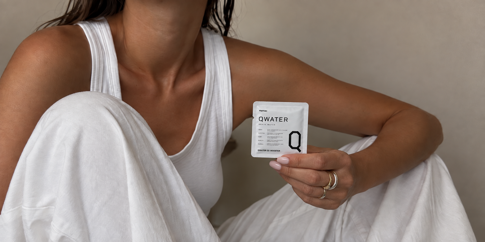
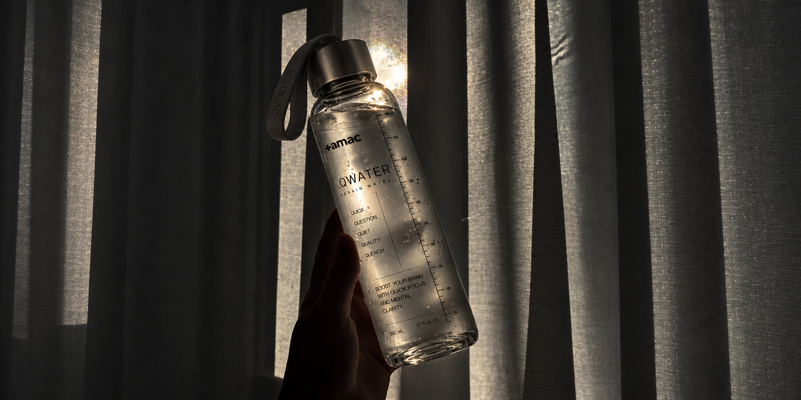
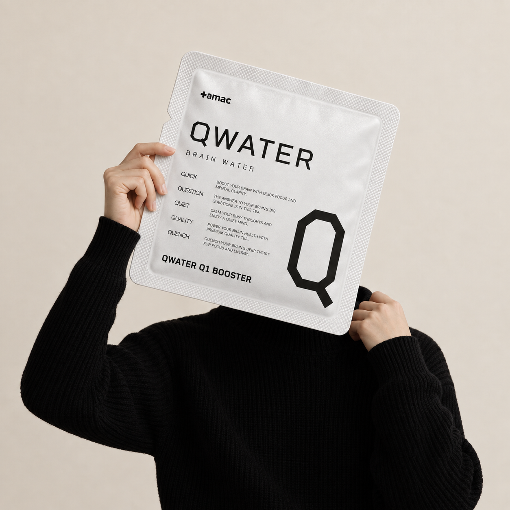
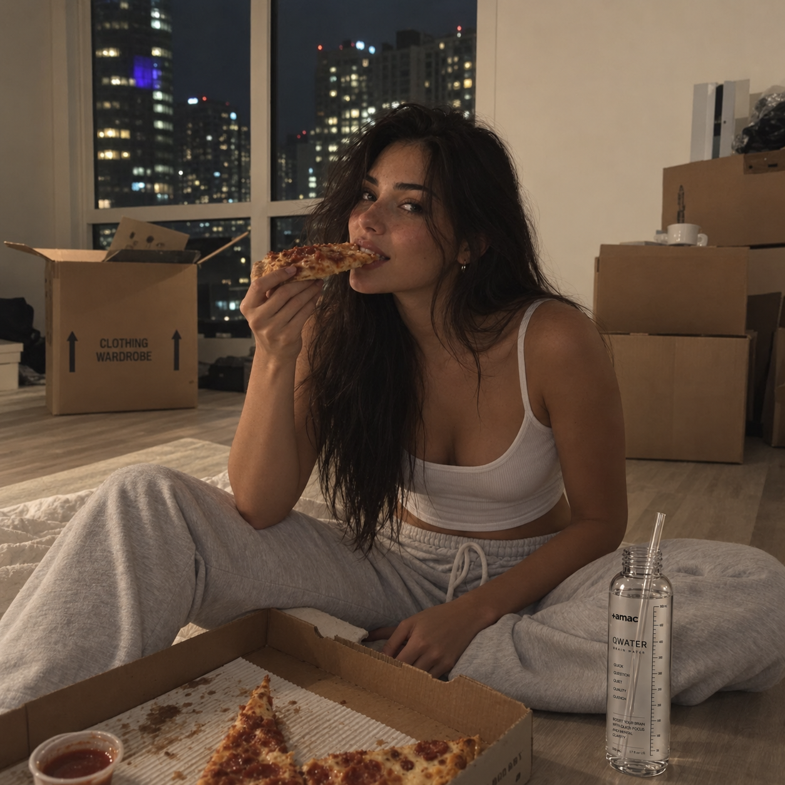
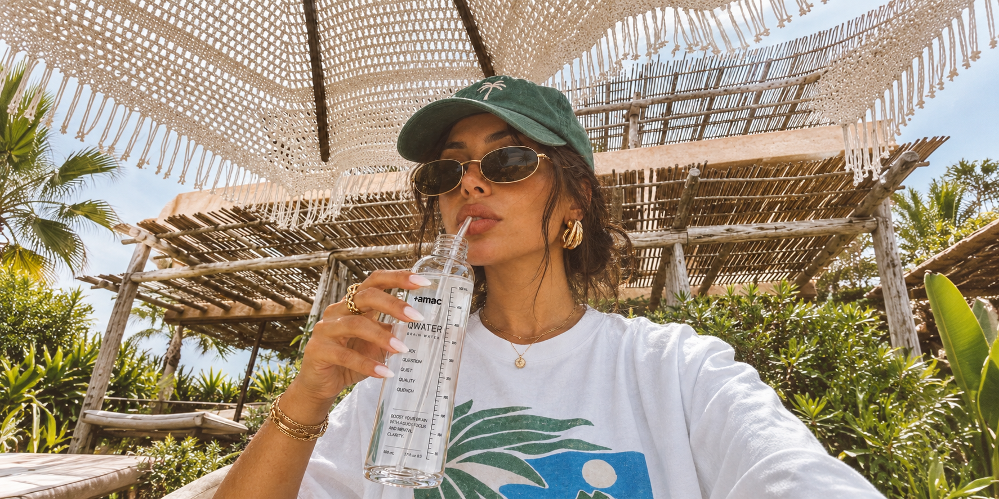

WHY THE
GLUCOSE STAYS LOW.
Q1은 고당도 에너지드링크가 아닙니다.
소량의 포도당을 넣더라도 큰 에너지 효과를 주장하지 않습니다.
맛과 포뮬러의 균형을 위해 필요한 만큼만 사용합니다.
Q1 is not a high-sugar energy drink.
Even when a small amount of glucose is used, we do not turn it into an exaggerated energy claim.
We use only what the formula needs for balance and taste.

FORMULA YOU
CAN AUDIT.
성분명만 공개해서는 충분하지 않습니다.
AMAC는 함량, 지표성분, 제조 LOT와 품질기준까지 추적할 수 있는 제품을 지향합니다.
신뢰는 광고가 아니라 확인 가능성에서 시작됩니다.
An ingredient list alone is not enough.
AMAC aims to make dosage, marker compounds, manufacturing LOT information and quality standards traceable.
Trust begins with what can be verified, not what can be advertised.
Q2
SIDE
속도를 낮추는 시간대를 위한 구성입니다.
수면을 유도하는 약이 아닙니다.
A composition for the hours that slow down.
Not a drug that induces sleep.

WHY
EACH ONE
성분 수를 늘려 신뢰를 만들지 않습니다.
역할이 없는 성분은 빼는 것이 설계입니다.
We do not build trust by lengthening the list.
Removing what has no role is the design.
WHAT WE
LEFT OUT
불필요한 향과 색을 넣지 않았습니다.
물의 맛을 크게 바꾸지 않는 것이 기준입니다.
No unnecessary flavors or colors.
The standard is not to change the taste of water much.

THE
TASTE
매일 마셔야 하므로 맛은 얕아야 합니다.
강한 맛은 반복을 방해합니다.
It has to be drunk daily, so the taste stays light.
A strong taste gets in the way of repetition.

ALLERGENS
AND CARE
알레르기 정보는 포장에 그대로 표기합니다.
복용 중인 약이 있으면 전문가와 상의하십시오.
Allergen information is printed as is on the pack.
If you take medication, consult a professional.

THE
SOURCING
원료의 출처와 규격을 문서로 관리합니다.
바뀌면 표기도 바뀝니다.
Origins and specifications are managed as documents.
If they change, the label changes.